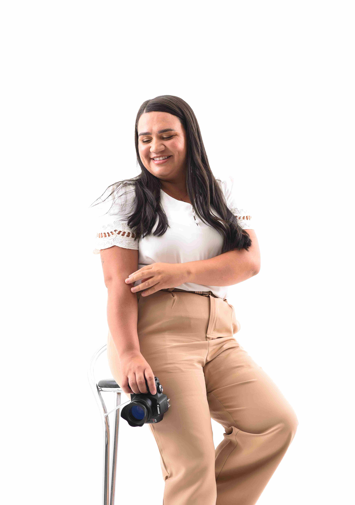

Fotógrafa de comida em Caruaru, Pernambuco. Trabalho há alguns anos no ramo da alimentação, adquiri experiência e, assim, pude perceber a importância da fotografia na culinária. Tenho paixão por capturar a essência dos sabores. Meu objetivo é continuar me desenvolvendo na área, cooperando com o crescimento da sua empresa. Vamos crescer juntos com fotos que geram desejo? Me manda um "Oi" no WhatsApp tenho uma proposta exclusiva para você!